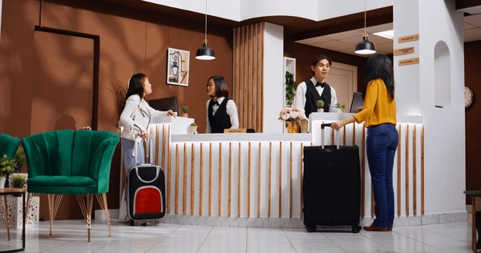

Our Story

Hotel Oasis was born from a vision to create a serene haven where travelers can escape, relax, and indulge in luxury. Since opening our doors in 2005, we have combined elegant design with heartfelt hospitality to craft unforgettable experiences. Nestled by the ocean, our hotel has grown into a beloved destination known for comfort, warmth, and exceptional service — a place guests are proud to call their home away from home.
Our Mission

Our mission at Hotel Oasis is simple yet powerful: to deliver exceptional hospitality that exceeds every guest’s expectations. We are committed to providing a welcoming atmosphere, personalized service, and memorable moments that inspire loyalty and joy. Through continuous innovation and a dedicated team, we strive to be the premier choice for travelers seeking comfort, luxury, and genuine care.
Meet Our Team
At Hotel Oasis, our greatest strength lies in our people. Our dedicated team of hospitality professionals is passionate about creating memorable experiences for every guest. From the friendly faces at the front desk to the expert chefs in our kitchen and the attentive staff behind the scenes, everyone works together with one goal — to make your stay comfortable, enjoyable, and truly special. With personalized service and genuine care, our team is here 24/7 to welcome you like family and ensure your visit exceeds all expectations.
Contact Us
Hotel Oasis,Which is located in Bateshwar Sylhet within 5 minutes distance of Metropolitan University
Email: info@hoteloasis.com
Phone: +123 456 7890